Tutorial
This section uses the command line to assign parameters to CropGBM, introduces the implementation of each function of the program in detail, and displays some results to help users configure the corresponding parameters according to the research purpose. The tutorial uses 6210 F1 offspring maize genome SNP data obtained by crossing 207 maternal and 30 paternal lines. Each sample contains 4903 SNP sites.
Test data download address 1: https://gitee.com/cau-xyt/cropgbm_tutorial_data/tree/master
Test data download address 2: https://github.com/YuetongXU/CropGBM_Tutorial-data
Parameter configuration
CropGBM supports two parameter assignment forms: 'configuration file' and 'command line', of which 'configuration file' is required. CropGBM will read the values of the parameters in the configuration file first, and then read the values of the parameters in the command line. When a parameter is assigned by both methods at the same time, CropGBM uses the parameter value in the command line as a reference and ignores the parameter value in the configuration file.
The configuration file is a collection of parameters and their corresponding values in one file, which is convenient for users to uniformly manage and reuse a large number of parameters. The configuration file format is as follows:
[preprocessed_geno]
# boolean
phe_norm = false
phe_plot = true
# necessary
phefile_path = /home/xyt/GBM_test3/8652.phe
# semi-necessary
ppgroupfile_path =
ppgroupid_column =
ppgroupfile_sep =
# optional
phefile_sep = ' '
phe_column = 13
norm_mode = z-score
[preprocessed_geno]The name of the module. The parameters below are only used when the module is called. (The parameters under the[DEFAULT]module can be called in other modules).# booleanBoolean parameters. When assigning, the program will execute the function corresponding to the parameter. Otherwise, the program will not execute the corresponding function.# necessaryNecessary parameters. If the parameter is not assigned a value, an error will be reported when calling the module.# semi-necessarySemi-necessary parameters, If the parameter is not assigned, an error will be reported when calling specific function.# optionaloptional parameters, If the parameter is not assigned, certain functions cannot be used, but no error is reported.
For the convenience of users, the program contains a configuration file named configfile.params after decompression. By modifying the configuration file, users can quickly and massively assign values to parameters. Parameters weith default values have been assigned default values in the configuration file, such as norm_mode=z-score. Usrs can also change the parameter values according to their needs. When the parameter value is empty, None, false, False, if the parameter contains the default value, the default value will be used, otherwise the program thinks that this parameter has not been assigned a value.
Genotype data pre-processing
- Screen out non-compliant sample individuals and SNP sites based on deletion rate and MAF
- Fill missing SNP data based on high frequency genotypes
- Remove redundant SNP according to r ^ 2
- Genotype data recoding (genotype -> 012)
- Extract specific genotype data of specific samples based on SNPID or sampleID
- Visualization of heterozygosity, deletion, and frequency distribution of MAF for genotype data
CropGBM calls PLINK to complete part of the pre-processing of the genotype data, and provides identifiable file formats and data for downstream analysis. CropGBM will create a folder named preprocessed under the output path specified by the user, and store the output files in this directory.
Input: ped, bed, vcf, bcf format files
Output: filename_filter.bed / bim / fam / ped / map, filename.log / prune.in / .prune.out / frqx / imiss / irem / lmiss, filename_filter.geno, filename_maf / het / imiss / lmiss.pdf
Pre-processing data
$ cropgbm -c configfile.params -o gbm_result/ -pg all --fileprefix genofile --fileformat ped --snpmaxmiss 0.10 --samplemaxmiss 0.10 --maf-max 0.05 --r2-cutoff 0.7
-c Configuration file path: configfile.params
-o Output path of program running result: gbm_result/
-pg Call preprocessed genotype data module, optional values [all, filter]. The 'all' indicates that the program will call the complete pre-processing module, including: statistical and visual data basics, screening out non-compliant sample individuals and SNP sites based on the deletion rate, MAF, and filling the missing data of SNP based on high-frequency genotypes, removing redundant SNP according to r ^ 2, extracting specific genotype data function of specific sample according to SNPID or sampleID. The 'filter' indicates that the program will call part of the preprocessing module, which only includes the specific extraction of specific samples according to SNPID or sampleID: all
--fileprefix Genotype data file name prefix: genofile
--fileformat Genotype data file format, optional values [ped, bed, vcf, bcf]: ped
--snpmaxmiss SNP maximum deletion rate. SNP whose deletion rate exceeds this threshold will be eliminated. Default is 0.05: 0.10
--samplemaxmiss Sample maximum missing rate. Samples whose missing rate exceeds this threshold will be rejected. Default is 0.05: 0.10
--maf-max Minimum allele frequency. SNP whose minimum allele frequency is less than this threshold will be eliminated. Default is 0.01: 0.05
--r2-cutoff Equivalent to the --indep-pairwise parameter in PLINK. Default is 0.8: 0.7
Output files genofile_filter.bed / bim / fam / ped / map, genofile.frqx / imiss / irem / lmiss / prune.in / prune.out, filename_maf / het / imiss / lmiss.pdf:
genofile_filter.bed/bim/fam bed format file, and the encoding method of the genotype is ATCG-> 013 (minor-> 0, major-> 1, miss-> 3), which prepares for subsequent re-encoding into additive encoding. Because PLINK can quickly read and process bed files, such files can be used as intermediate files for generating training, test, and validation sets.
genofile_filter.ped/map ped format file for genotype re-encoding (-> 012), and the encoding method of the genotype is ATCG-> 01, preparing for subsequent re-encoding into additive encoding (minor-> 0, major-> 1 , Miss-> 3).
genofile.frqx contains the number of each genotype per SNP locus.
genofile_het.pdf SNPs heterozygosity distribution histogram. The horizontal axis is the SNP heterozygosity, and the vertical axis is the number of SNP in the interval. (fig 1)
genofile_maf.pdf SNPs MAF distribution histogram. The horizontal axis is the minimum allele frequency of SNP, and the vertical axis is the number of SNP in the interval.
genofile.imiss contains the missing rate of each sample.
genofile_imiss.pdf Histogram of sample missing rate distribution. The horizontal axis is the sample missing rate, and the vertical axis is the number of samples in the interval.
genofile.irem contains the sampleID that was rejected because the missing rate exceeded the threshold.
genofile.lmiss contains the missing rate of each SNP site.
genofile_lmiss.pdf Histogram of SNP missing rate distribution. The horizontal axis is the SNP deletion rate, and the vertical axis is the number of SNP in the interval.
genofile.prune.in / prune.out SNPid retained (.prune.in) / removed (.prune.out) after indep
genofile_plink.log The log file output when the program calls PLINK.
genofile_preprocessed.log Standard output when the program calls PLINK.
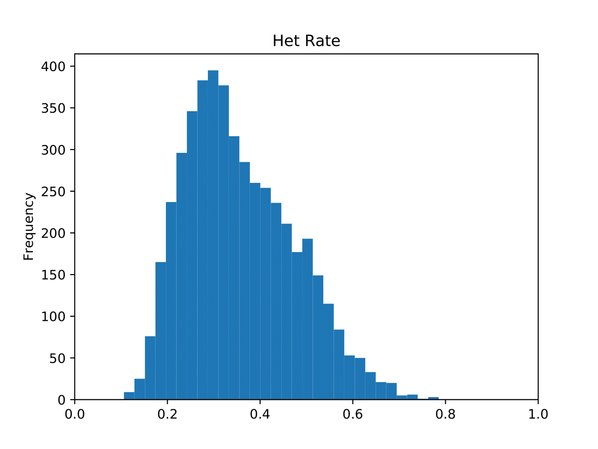
Extract specific sampleID and snpID data
$ cropgbm -c configfile.params -o gbm_result/ -pg filter --fileprefix genofile_filter --keep-sampleid-path ksampleid_file.txt --extract-snpid-path ksnpid_file.txt
--keep-sampleid-path sampleID file path. It can only identify files whose separator is a space or a tab. Read the first two columns of data (the first column is familyID and the second column is within-familyID). Extract the sample based on the sampleID in the file: ksampleid_file.txt
--extract-snpid-path snpID file path, extract snp according to the snpID in the file: ksnpid_file.txt
$ cropgbm -c configfile.params -o gbm_result / -pg filter --fileprefix genofile_filter --remove-sampleid-path rsampleid_file.txt --exclude-snpid-path rsnpid_file.txt
--remove-sampleid-path sampleID file path. It can only identify files with spaces or tabs. Read the first two columns of data (the first column is familyID and the second column is within-familyID). Remove samples based on the sampleID in the file: rsampleid_file.txt
--exclude-snpid-path snpID file path, remove snp according to the snpID in the file: rsnpid_file.txt
Note: The input file in -pg filter mode only accepts bed format files. It is designed to generate the training set, test set, validation set, etc. from the bed intermediate files generated in all mode according to different requirements.
Recode bed format data
$ cropgbm -c configfile.params -o gbm_result/ -pg filter --fileprefix genofile_filter --recode --remove-sampleid-path rsampleid_file.txt --exclude-snpid-path rsnpid_file.txt
--recode Change the encoding method of genotype data to additive encoding, the change rules are: 00-> 0, 01-> 1, 10-> 1, 11-> 2
The output file is genofile_filter_filter.bed / bim / fam / ped / map / geno:
genofile_filter_filter.bed / bim / fam / ped / map is the output file after filter
genofile_filter_filter.geno is the re-encoded output file, the sampleID is within-familyID in the ped file
Overall use of parameters
$ cropgbm -c configfile.params -o gbm_result/ -pg all --fileprefix genofile --fileformat ped --snpmaxmiss 0.10 --samplemaxmiss 0.10 --maf-max 0.05 --r2-cutoff 0.7 --recode --keep-sampleid-path ksampleid_file.txt --extract-snpid-path ksnpid_file.txt
The output files are filename_filter.bed / bim / fam / ped / map, filename.prune.in/.prune.out/frqx/imiss/irem/lmiss, filename_filter.geno, filename_maf / het / imiss / lmiss.pdf
Note: The above parameters except -c and-pg can be set in the configuration file and omitted on the command line.
Phenotype data pre-processing
- Extract specific sample phenotype data based on sampleID or groupID
- Phenotype data normalization
- Visualization of phenotype data distribution
- Phenotype data re-encoding (multi-classification problem)
CropGBM uniformly stores the output files in the preprocessed folder under the user-specified save path.
Input: phenotype data with at least two columns. The program treats the first column of data as a sampleID.
Output: phefile.phe, phefile.phenorm, phefile_groupN.phe, phefile_groupN.phenorm, phefile.numphe, phefile.wordphe, phefile.word2num, phefile_scatter.pdf, phefile_plotdd.pdf
Extract and visualize specific phenotype data
$ cropgbm -c configfile.params -o gbm_result/ -pp --phe-plot --phefile-path phefile.txt --phefile-header --phefile-sep ',' --phe-column 4
-pp Call the preprocessed phenotype data module.
--phe-plot Calls phenotype data visualization functions.
--phefile-path Phenotype data file path: phefile.
--phefile-header The phenotype data file contains headers.
--phefile-sep Phenotype data file separator. Default is ',': ','
--phe-column The column index in the phenotype data file that stores phenotype information. This parameter is only called when the number of columns in the phenotype file is greater than 2. Default is 2: 4
The output files are phefile.phe, phefile_plotdd.pdf:
phefile.phe is the output file for the extracted specific phenotype data. The file has a total of two columns (sampleID, phenotype value), including the header.
phefile_plotdd.pdf Phenotype data distribution histogram. The abscissa is the phenotype value, and the ordinate is the number. (fig 2)
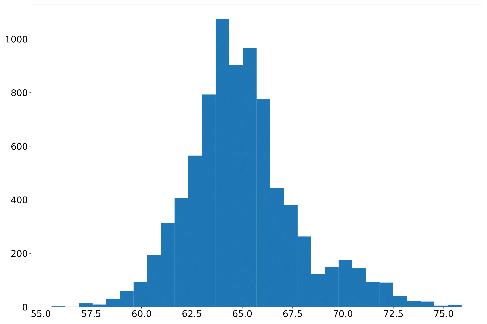
Extract phenotype data by sampleID
$ cropgbm -c configfile.params -o gbm_result/ -pp --phefile-path phefile.txt --phefile-header --phefile-sep ',' --phe-column 4 --ppexsampleid-path ksampleid_file.txt
--ppexsampleid-path sampleID file path. The file content requirement is only a list of sampleID. The program extracts the phenotype data of the corresponding sample in the phenotype data file according to the sampleID in the file: ksampleid_file.txt
The output file is phefile.phe:
phefile.phe is an output file that extracts specific sample phenotype data based on the sampleID.
Extract and visualize the phenotype data by groupID
$ cropgbm -c configfile.params -o gbm_result/ -pp --phe-plot --phefile-path phefile.txt --phefile-header --phefile-sep ',' --phe-column 4 --ppgroupfile-path phefile.txt --ppgroupfile-sep ',' --ppgroupid-column 2 --ppgroupfile-header
--ppgroupfile-path GroupID data file path: phefile.txt
--ppgroupfile-header GroupID data file contains headers.
--ppgroupfile-sep GroupID data file separator. Default is ',' :,
--ppgroupid-column The column index where groupID information is stored in the groupID data file. This parameter is only used when the number of ppgroupfile columns is greater than 2. Default is 2: 2
The output files are phefile_groupN.phe, phefile_scatter.pdf:
phefile_groupX.phe is an output file that extracts phenotype data of the same group of samples according to the groupID of the sample, where X is the groupID of the sample. Generate a total of N files, each file contains only the sample belonging to the groupX and its phenotype data, where N is the number of groups.
phefile_scatter.pdf displays the distribution of phenotype data in each group in the form of scatter plots and boxplots. The abscissa is the groupID and the ordinate is the phenotype value. Each point represents a sample. (fig 3)
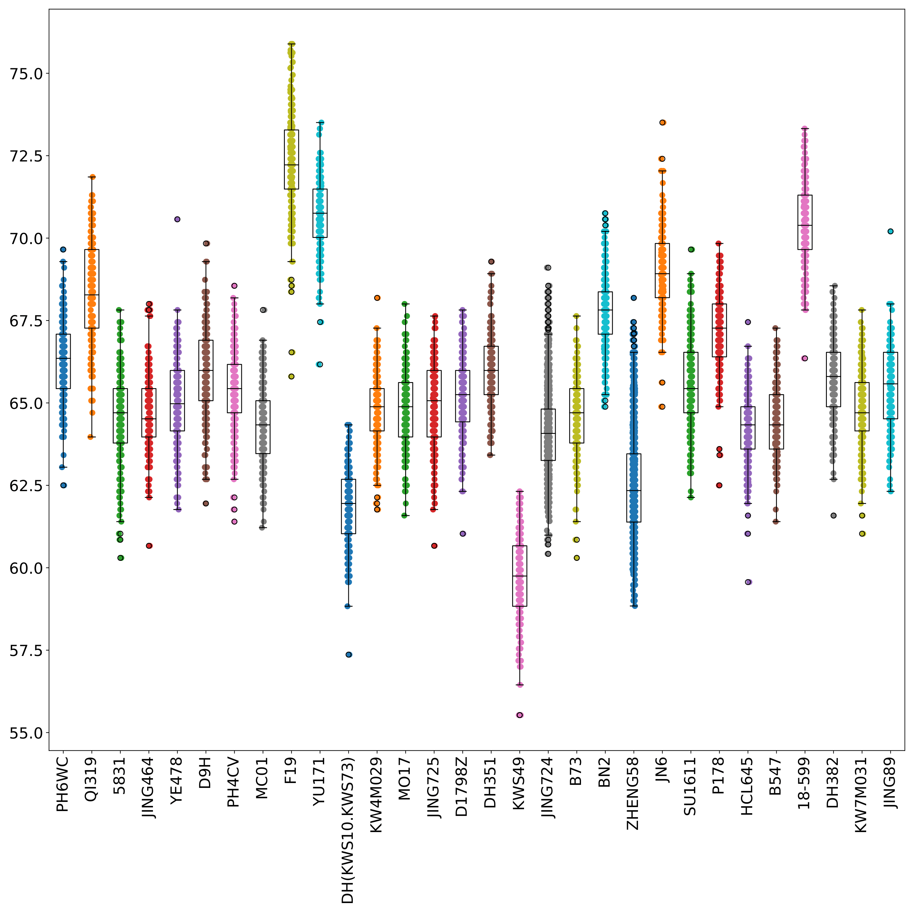
Normalize and visualize phenotype data
$ cropgbm -c configfile.params -o gbm_result/ -pp --phe-plot --phefile-path phefile.txt --phefile-header --phefile-sep ',' --phe-column 4 --ppgroupfile-path phefile.txt --ppgroupfile-sep ',' --ppgroupid-column 2 --ppgroupfile-header --phe-norm --norm-mode z-score
--phe-norm calls the phenotype data normalization function.
--norm-mode Normalization algorithm, optional values [0-1, max-min, z-score]. Default is z-score: z-score
The output files are phefile_groupN.phenorm, phefile_scatter.pdf:
phefile_groupX.phenorm is an output file after extracting and normalizing the phenotype data of the same group of samples according to the groupID of the sample, where X is the groupID of the sample. Generate a total of N files, each file contains only the sample belonging to the groupX and its phenotype data, where N is the number of groups of samples
phefile_scatter.pdf shows the distribution of normalized phenotype data in each group in the form of scatter plots and boxplots. The abscissa is the groupID, and the ordinate is the phenotype value. Each point represents a sample. (fig 4)
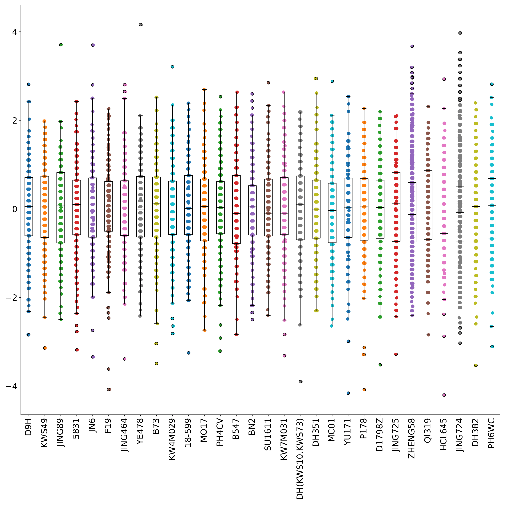
Recoding phenotype data (multi-classification)
$ cropgbm -c configfile.params -o gbm_result/ -pp --phe-recode word2num --phefile-path phefile.txt --phefile-header --phefile-sep ',' --phe-column 2
--phe-recode Calls the phenotype data recoding function, optional values[word2num, num2word]. Word2num means re-encoding phenotype data into continuous non-negative integer form, and num2word means re-encoding continuous non-negative integer form into phenotype data (requires conversion table of integer and phenotype). When performing classification tasks, LightGBM only accepts consecutive integers with example labels [0, N). If the training sample comes from 5 groups, [0, 1, 2, 3, 4] is required as the label of the 5 groups, but this usually does not match the actual group name. Using this parameter, the program can implement a reversible conversion between sample labels and [0, N) consecutive integers. Provide compatible phenotype data for downstream classification tasks: word2num
The output files are phefile.numphe, phefile.word2num:
phefile.numphe is an output file that recodes phenotype data into consecutive non-negative integers. Because LightGBM requires the coding form of each category to be a continuous non-negative integer starting from 0 when predicting classification problems, the actual phenotype data is difficult to meet this requirement. The program uses the phenotype data re-encoding function to achieve the above conversion.
phefile.word2num is a correspondence file between phenotype data and continuous non-negative integer encoding.
$ cropgbm -c configfile.params -o gbm_result/ -pp --phe-recode num2word --num2wordfile-path phefile.word2num --phefile-path phefile.numphe --phefile-header --phefile-sep ',' --phe-column 2
--num2wordfile-path Integer and phenotype corresponding to the conversion table file path. This parameter is only used when --phe-recode = num2word: phefile.word2num
The output file is phefile.wordphe:
phefile.wordphe is an output file that recodes consecutive non-negative integers into phenotype data
Note: The re-encoding function is mainly used to transform phenotype data when predicting classification problems. Word2num is commonly used to convert the phenotype data of the training set samples into a format that can be processed by the program, and num2word is often used to convert the prediction results of the test set into the original phenotype data format.
Population structure analysis
- Analysis of population structure based on genotype data
Input: genotype data
Output: filename.redim, filename.cluster, filename_redim.pdf, filename_cluster.pdf, filename_reachability.pdf
PCA-Kmeans analyze and visualize
$ cropgbm -c configfile.params -o gbm_result/ -s --genofile-path genofile_filter.geno --structure-plot --redim-mode pca --pca-explained-var 0.98 --cluster-mode kmeans --n-clusters 30
-s Calls the population structure analysis module.
--genofile-path The path of the genotype data file, often the preprocessed result is used as input: genofile_filter.geno
--structure-plot Calls the population structure plot function. A total of 2 (3) scatter plots are displayed showing the results of dimensionality reduction and clustering.
--redim-mode Dimension reduction algorithm, optional value [tsne, pca]. Default is pca: pca
--pca-explained-var The parameter value is an integer greater than 1 or a decimal value between 0-1. When the parameter value is an integer, it indicates the dimension of the data after pca dimensionality reduction; when the parameter value is a decimal, it indicates the amount of variation that can be explained by the data after pca dimensionality reduction. This parameter is only used when --redim-mode = pca. Default is 0.95: 0.98
--cluster-mode Clustering algorithm, optional value [kmeans, optics]. Default is kmeans: kmeans
--n-clusters The number of clusters. This parameter is only used when --cluster-mode = kmeans: 30 (Because it is known that the dataset is obtained by crossing 207 fathers with 30 mothers)
Output files filename.redim, filename.cluster, filename_redim.pdf, filename_cluster.pdf:
filename.redim is the output file for the dimensionality reduction results. The content is in multiple columns: the first column is the sampleID, and the subsequent columns are the dimension values after dimensionality reduction.
filename.cluster is the output file for the clustering results. The content is two columns: sampleID, groupID. Where the groupID is '-1' means this sample is not clustered.
filename_redim.pdf displays the dimensionality reduction results in the form of a scatter plot. (fig 5)
filename_cluster.pdf displays the clustering results in the form of a scatter plot, with different groupID indicated by different colors. (fig 6)
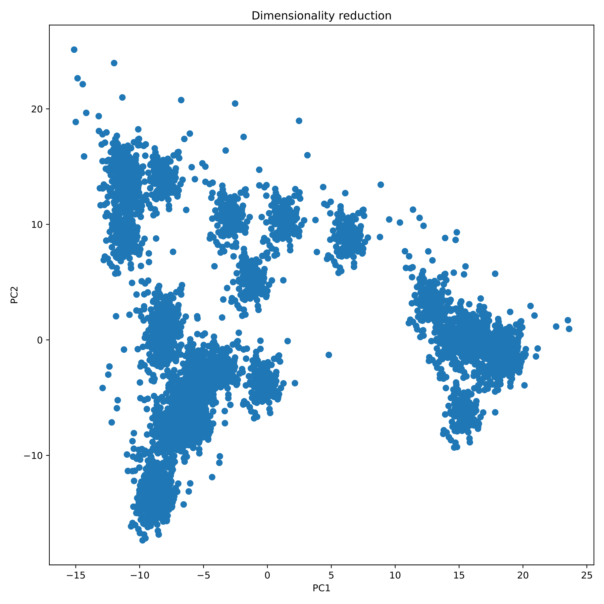
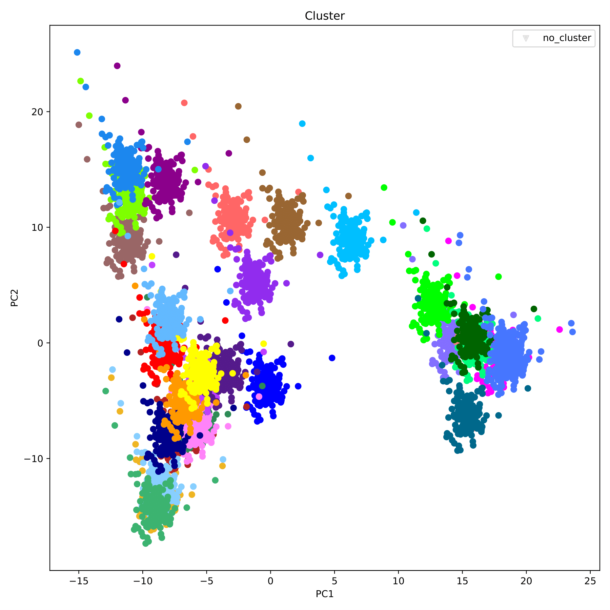
t-SNE-OPTICS analyze and visualize
The t-SNE and OPTICS algorithms are more suitable for data set with unknown population categories. PCA and Kmeans algorithms are recommended when the number of population groups is known.
$ cropgbm -c configfile.params -o gbm_result/ -s --genofile-path genofile_filter.geno --structure-plot --redim-mode tsne --window-size 5 --tsne-dim 2 --cluster-mode optics --optics-min-sample 0.025 --optics-xi 0.01 --optics-min-cluster-size 0.03
--window-size Sliding window size in dimension reduction. Since the calculation speed of the t-SNE algorithm decreases significantly with increasing dimensions, the program performs a preliminary dimensionality reduction on the data by sliding windows. When the number of snp is small, the parameters have a greater impact on the dimensionality reduction results. It is recommended to reduce the parameter value as the number of snp decreases. Default is 20. This parameter is only used when --redim-mode = tsne: 5
--tsne-dim Dimension of data after dimension reduction of t-SNE algorithm. This parameter is only used when --redim-mode = tsne. Default is 2: 2
--optics-min-samples The parameter value is an integer greater than 1 or a decimal between 0-1. When the parameter value is an integer, it indicates the minimum number of samples required to form the core point; when the parameter value is a decimal number, it indicates the ratio of the minimum number of samples required to form the core point to the total sample number. This parameter is only used when --cluster-mode = optics. Default is 0.025: 0.05
--optics-xi Minimum value of the reachable distance gradient required for clustering. This parameter is only used when --cluster-mode = optics. Default is 0.05: 0.05.
--optics-min-cluster-size The parameter value is an integer greater than 1 or a decimal between 0-1. When the parameter value is an integer, it indicates the minimum number of samples required for the aggregation. When the parameter value is a decimal number, it indicates the ratio of the minimum number of samples required for the aggregation to the total number of samples. This parameter is only used when --cluster-mode = optics. Default is 0.03: 0.06
Output files filename.redim, filename.cluster, filename_redim.pdf, filename_cluster.pdf, filename_reachability.pdf:
filename_redim.pdf displays the dimensionality reduction results in the form of a scatter plot. (fig 7)
filename_cluster.pdf displays the clustering results in the form of a scatter plot, with different groupIDs indicated by different colors. (fig 8)
filename_reachability.pdf displays the reachable distance between each sample in the form of a scatter plot, which is only output when--redim-mode = tsne. Different categories are represented by different colors, and discrete points are represented by black. (fig 9)
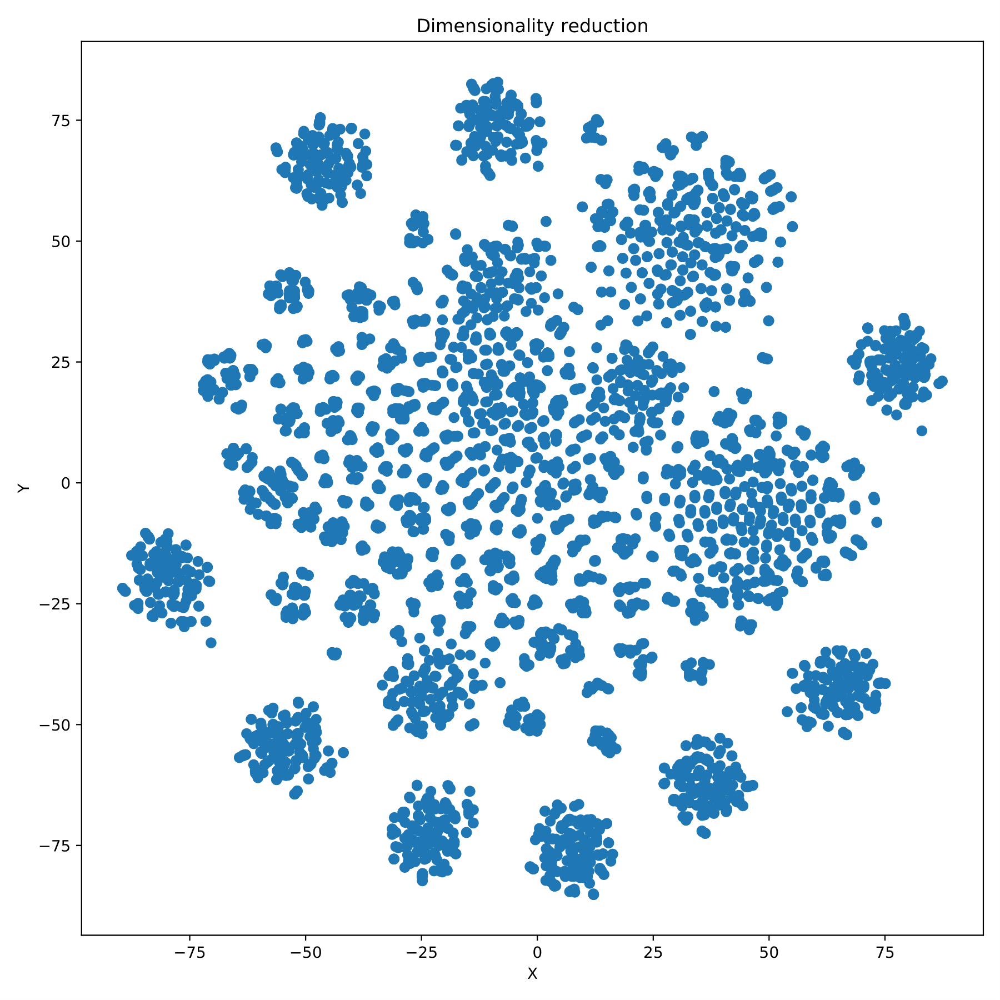
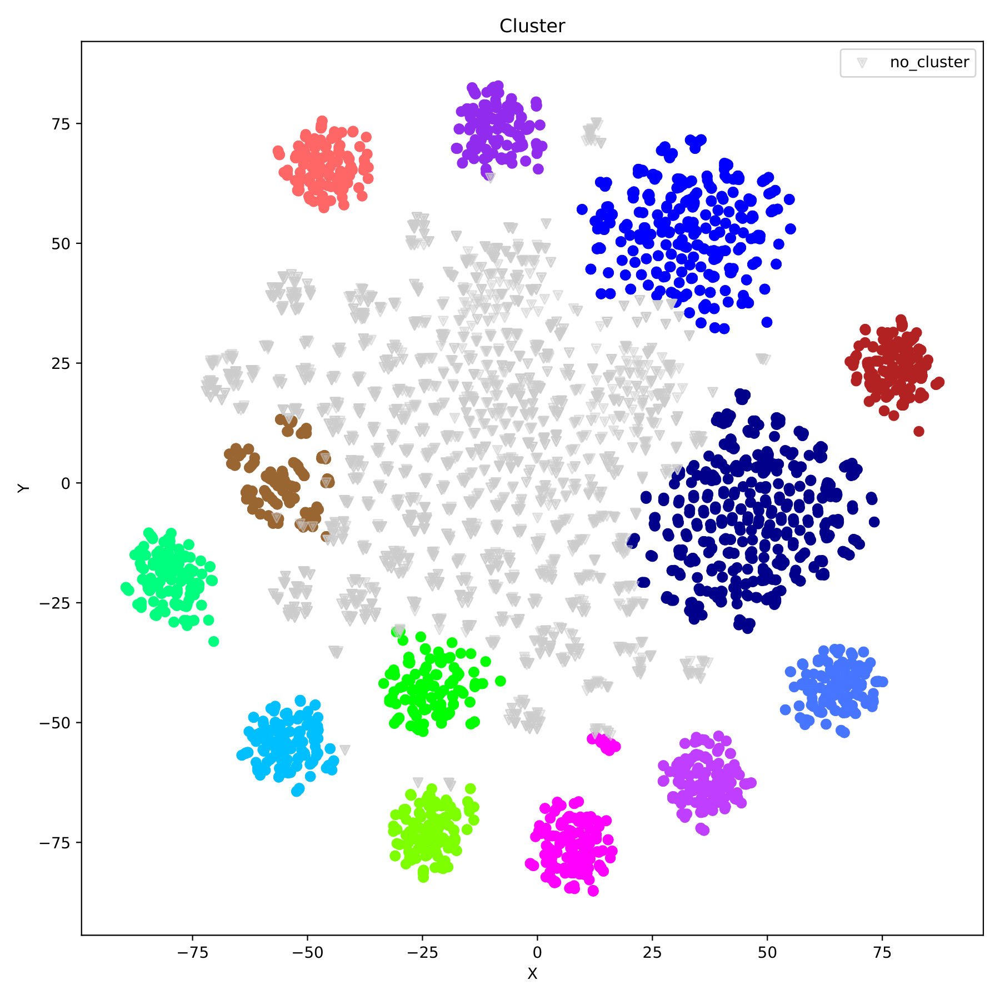
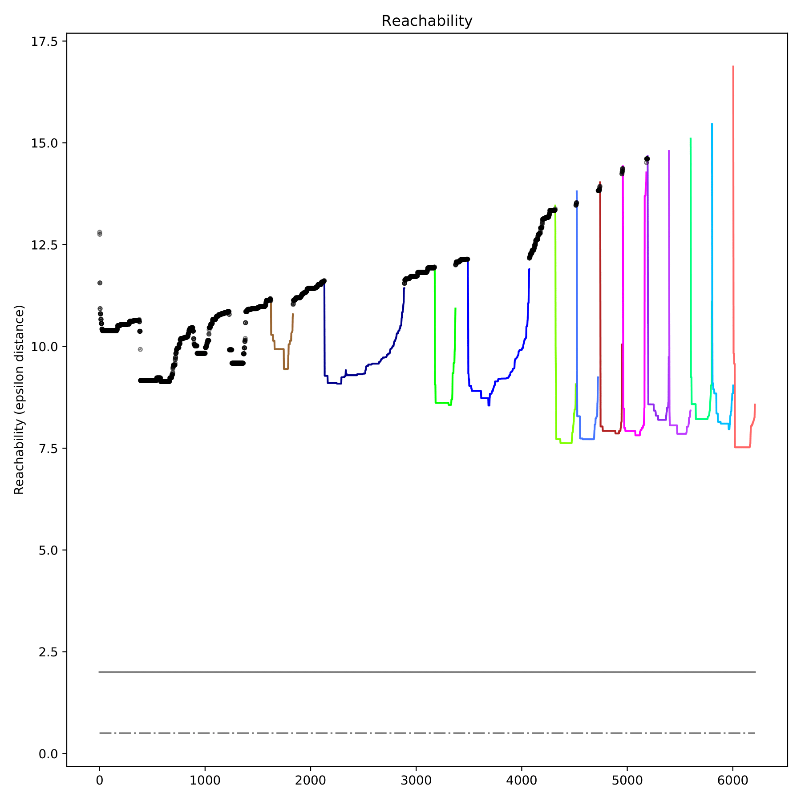
Compare the differences between results and label
$ cropgbm -c configfile.params -o gbm_result/ -s --genofile-path genofile_filter.geno --structure-plot --redim-mode tsne --window-size 5 --tsne-dim 2 --cluster-mode optics --optics-min-sample 0.025 --optics-xi 0.01 --optics-min-cluster-size 0.03 --sgroupfile-path phefile.txt --sgroupfile-sep ',' --sgroupid-column 2 --sgroupfile-header
--sgroupfile-path Group label data file path: phefile.txt
--sgroupfile-sep Group label data file separator: ','
--sgroupfile-column The column index in the group label data file that stores group label information. This parameter is only used when the number of --sgroupfile-path file columns is greater than 2: 2
--sgroupfile-header The group label data file file contains headers.
Output files filename.redim, filename.cluster, filename_redim.pdf, filename_cluster.pdf, filename_reachability.pdf:
filename_redim.pdf displays the dimensionality reduction results in the form of a scatter plot. When the parameter --sgroupfile-path is assigned, the program will mark the true labels of each sample on the basis of the dimensionality reduction map, and different group are indicated by different colors. (fig 10)
filename_cluster.pdf displays the clustering results in the form of a scatter plot, with different groups indicated by different colors. (fig 11)
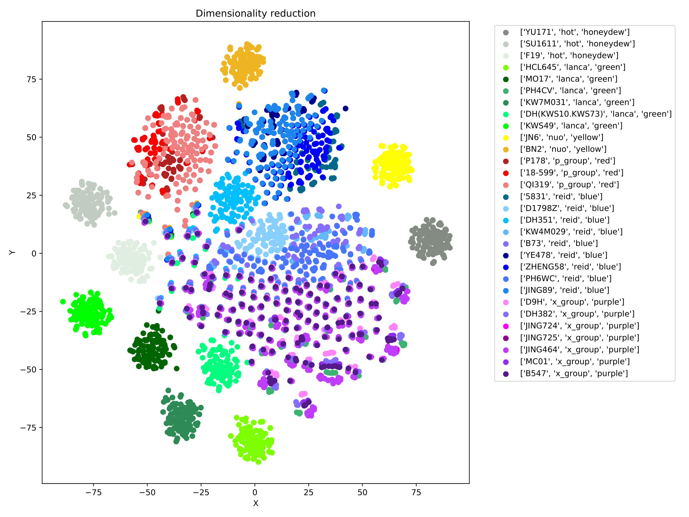
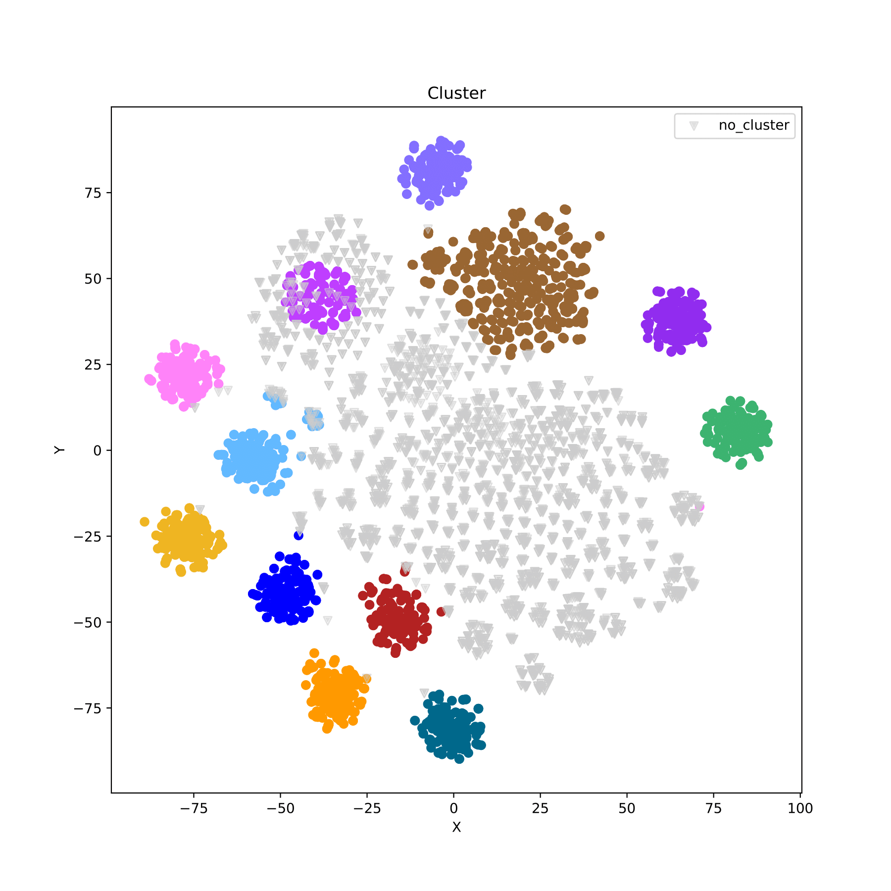
Training model SNP selection
- Training model
- SNP selection
Input: genotype data, phenotype data
Output: filename.lgb_model, filename_bygain.pdf, filename_random.pdf, filename_heatmap.pdf
The program allows the user to modify some parameters in the LightGBM algorithm according to the research purpose. But because there are many parameters, this tutorial does not introduce them. For related content, please refer to: Program parameters> SNP selection and phenotype prediction > LightGBM parameter
Cross-validation
During model training, if there is no validation set to help determine whether the model is overfitting, it is recommended to use -cv to determine a reasonable number of trainings.
$ cropgbm -c configfile.params -o gbm_result/ -e -cv --traingeno train.geno --trainphe train.phe --cv-nfold 5 --min-detal 0.5
-e Call the SNP selection and phenotype prediction module.
-cv Call the cross-validation function.
--traingeno Training set genotype data file path. The file separator is ',', the first line is the snpID information, and the first column is the sampleID information. This parameter is used when -t or-cv is specified: train.geno
--trainphe Path to the training set sample phenotype data file. The file separator is ',', including the header, and the first column is the sampleID information. This parameter is used when -t or-cv is specified: train.phe
--cv-nfold Number of folds per cross-validation. Default is 5: 5
--min-detal The minimum percentage improvement in model accuracy per training. The program returns the number of times the model is trained when the accuracy is less than this threshold and the accuracy of the model's cross-validation at this time. When objective = regression, the accuracy is the mean of the mse between the predicted result and the true value. Default is 0.5: 0.5
Training model
$ cropgbm -c configfile.params -o gbm_result/ -e -t --traingeno train.geno --trainphe train.phe --validgeno valid.geno --validphe valid.phe
-t Call the training model function
--validgeno Path to the validation set genotype data file. The file separator is ',', the first line is the snpID information, and the first column is the sampleID information. : Valid.geno
--validphe The file path of the sampleID in the validation set. The file separator is ',', including the header, the first column is the sampleID: valid.phe
$ cropgbm -c configfile.params -o gbm_result / -e -t --traingeno test.geno --trainphe test.phe --validgeno valid.geno --validphe valid.phe --init-model-path train.lgb_model
--init-model-path Path to the starting model file. The LightGBM algorithm will continue to train based on this model. Commonly used for batch training of big data: train.lgb_model
Output file: train.lgb_model
train.lgb_model Model file. The tree structure of each training and the gain value of each node are recorded.
Note: The program recognizes different snp by sequence, not by column name. If the snp of the same index column is different between the two data sets, the program cannot recognize it. Therefore, the training set, test set, and validation set need to be consistent in the order of snp, otherwise the prediction result is non-reference.
SNP selection
$ cropgbm -c configfile.params -o gbm_result/ -e -t -sf --bygain-boxplot --traingeno train.geno --trainphe train.phe --gain-min 0.05 --colorbar-max 0.6 --cv-times 6
-sf Call the SNP selection function. This function is designed to be used in conjunction with the training model function (-t) and cannot be used alone.
--bygain-boxplot Draws a boxplot that keeps changing as the SNP joins the model. This parameter is used when -sf.
--gain-min calculates the total gain of each SNP in the model and uses the product of the maximum gain and--gain-min as the threshold. When the total gain of SNP in the model is less than the threshold, this SNP will not be selected. Default is 0.05: 0.05
--colorbar-max The product of the maximum gain of each SNP in each tree and --colorbar-max will be used as the maximum value of colorbar in the heat map. Default is 0.6: 0.6
--cv-times Number of repetitions for cross-validation. Default is 5: 6
Output files: train.lgb_model, train.feature, train_bygain.pdf, train_random.pdf, train_heatmap.pdf
train.lgb_model The model file. The tree structure of each training and the gain value of each node are recorded.
train.feature The SNP gain file. The gain value of each SNP in each decision tree is recorded.
train_bygain.pdf Shows the change of model error with the addition of SNP in the form of a scatter plot. The program repeated the 5-fold cross-validation on the training set using the added SNP. The x-axis coordinate in the figure is the new snpID added in each model, which is added in order from the largest featureGain_sum value of the SNP in the train.feature file. The y-axis coordinate is the prediction error. (fig 12)
train_random.pdf shows the change of model error with the addition of SNP in the form of boxplots. The x-axis in the figure is the number of SNP used by the model. Since the SNP used in each cross-validation is randomly extracted from all SNP, there is no snpID. The y-axis is the prediction error. (fig 13)
train_heatmap.pdf displays the gain value and change rule of each SNP in different decision tree in the form of a heatmap, that is, the information in the train.feature file. The x-axis coordinates in the figure are the number of the SNP, and they are arranged according to the featureGain_sum value of the SNP in the train.feature file. The y-axis coordinate is the decision tree number, and the number represents the number of times the model is trained (for example, tree20 represents the decision tree generated by the 20th training). (fig 14)
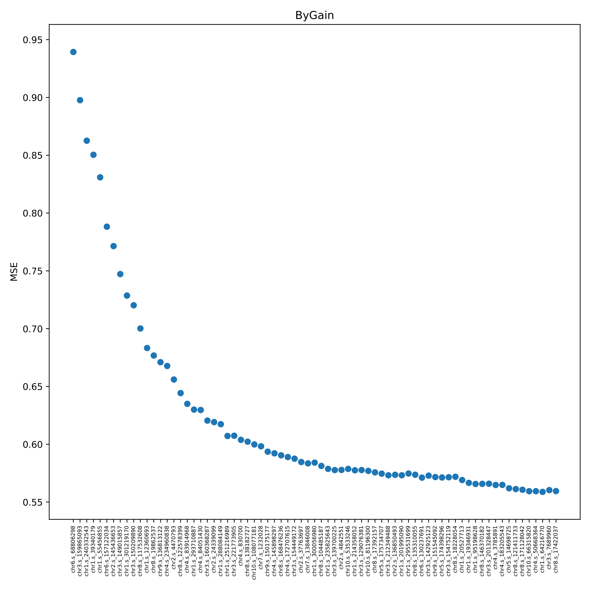
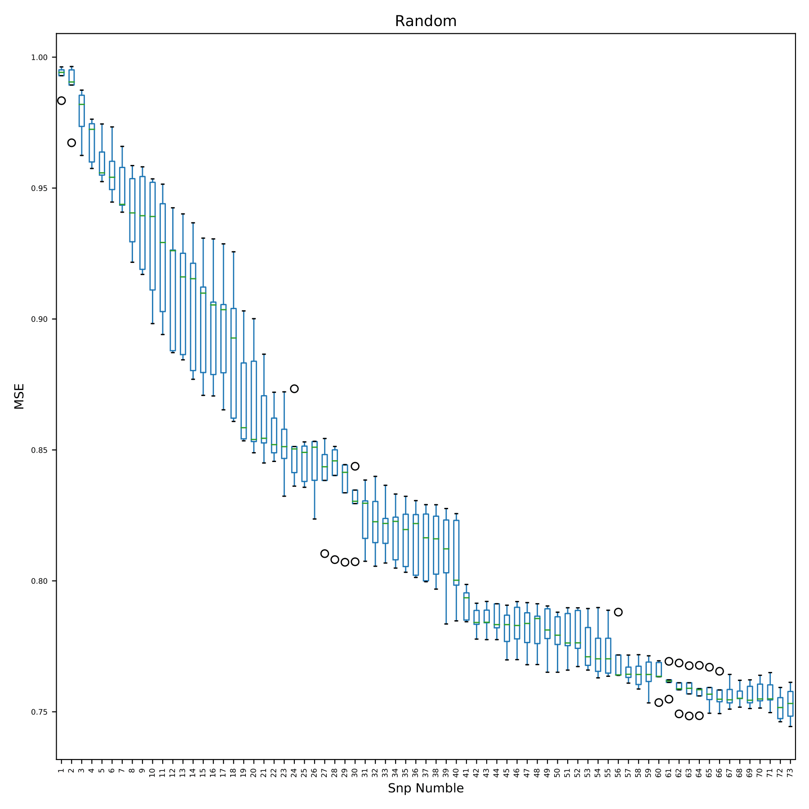
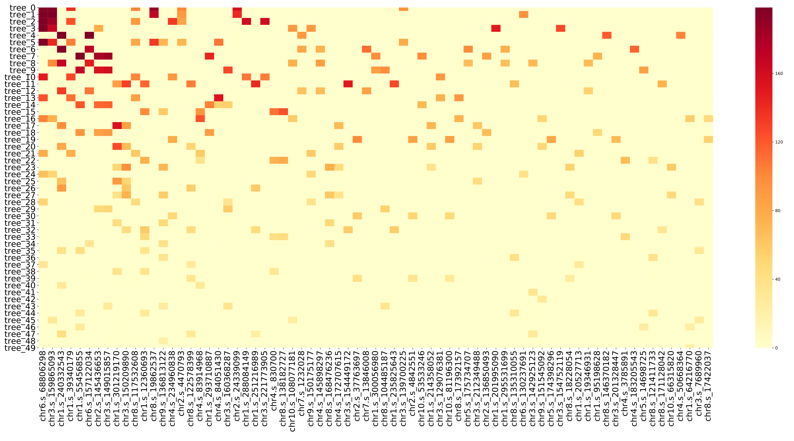
Phenotype prediction
- Phenotype prediction
Input: genotype data, model files
Output: filename.predict
$ cropgbm -c configfile.params -o gbm_result/ -e -p --testgeno test.geno --modelfile-path train.lgb_model
-p Call phenotype prediction function.
--testgeno Path of the test set genotype data file. The file separator is ',', the first line is the snpID information, and the first column is the sampleID information. This parameter is used when -p is specified: test.geno
--modelfile-path The path of the LightGBM model file. The program uses this model to complete the phenotype prediction of the test set. This parameter is used when -p is specified: train.lgb_model
Output file filename.predict:
filename.predict Output file of the prediction result.